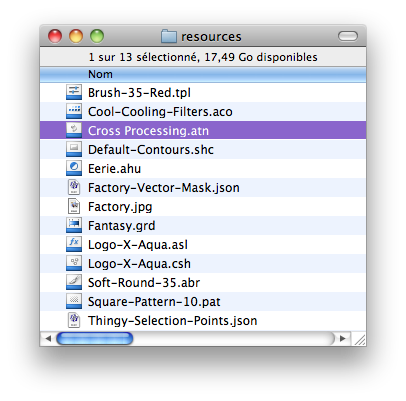
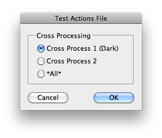

This script is part of the set of Test Scripts coming with the JSON Action Manager scripting library.
It shows how to play a specific action directly from the an actions file, without loading it first in the Actions Palette:

Back to JSON Action Manager Test Scripts